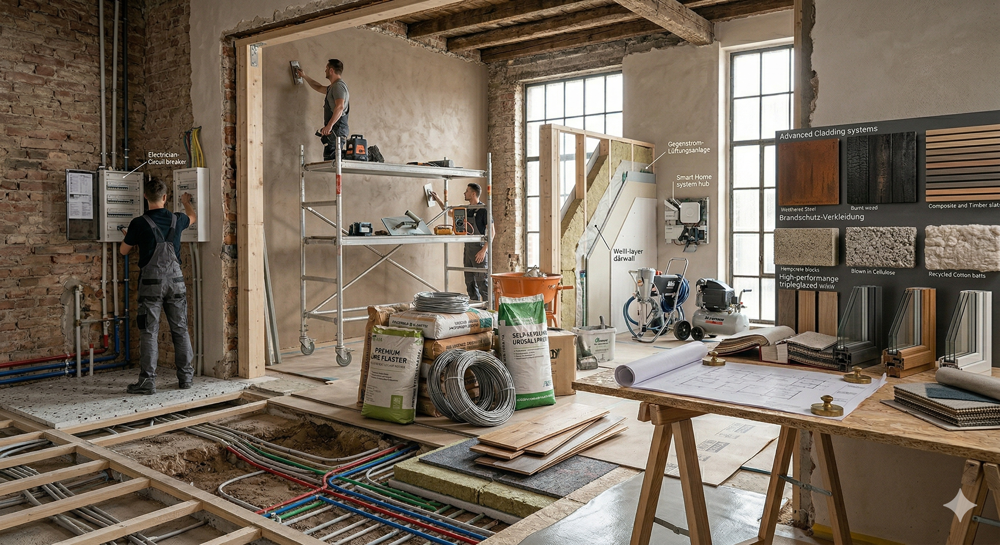
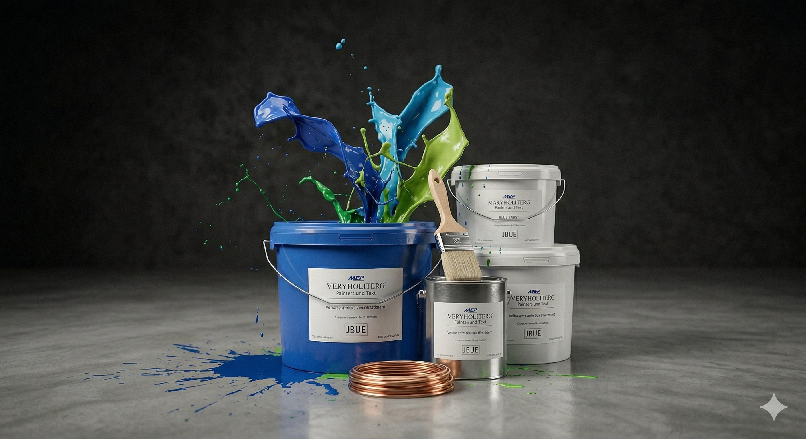

Komplettsanierungen
Von der ersten Planung bis zur finalen Übergabe erhalten Sie bei mir alles aus einer Hand - sauber, strukturiert und hochwertig umgesetzt.
Willkommen bei Raumausstattung A-Z. Ich gestalte Wohn- und Geschäftsräume in München und Umgebung mit hochwertiger Handwerksarbeit, klarer Kommunikation und einem Ergebnis, das lange überzeugt.
Entdecken Sie Leistungen, die Ihr Zuhause oder Ihre Geschäftsräume sichtbar aufwerten. Qualität, Zuverlässigkeit und individuelle Beratung stehen bei jedem Projekt im Mittelpunkt.
Ich biete spezialisierte Dienstleistungen, die auf Ihre Anforderungen zugeschnitten sind. Von klassischen Malerarbeiten bis zur umfassenden Sanierung begleite ich Ihr Projekt sauber, termintreu und transparent.

Von der ersten Planung bis zur finalen Übergabe erhalten Sie bei mir alles aus einer Hand - sauber, strukturiert und hochwertig umgesetzt.

Präzise Anstriche, saubere Kanten und stimmige Farbkonzepte sorgen für Räume, die hochwertig und einladend wirken.

Egal ob kleine Auffrischung oder größere Umgestaltung - ich bringe Ihre Räume abgestimmt auf Ihre Wünsche wieder zum Glänzen.
Ich arbeite verlässlich, sorgfältig und mit Blick auf eine reibungslose Umsetzung Ihres Projekts.
Farben, Materialien und Raumwirkung werden gemeinsam abgestimmt, damit das Ergebnis wirklich passt.
Ein klarer Ansprechpartner, transparente Kommunikation und Lösungen, die dauerhaft überzeugen.
Bei meiner Arbeit stehen Qualität, Sauberkeit und Vertrauen an erster Stelle. Ich möchte nicht nur Räume renovieren, sondern Orte schaffen, in denen man sich langfristig wohlfühlt.
Persönliche Beratung, ehrliche Kommunikation und handwerkliche Präzision machen meine Projekte aus. Ob Privatwohnung, Haus oder Gewerbefläche - ich nehme mir Zeit für eine Lösung, die wirklich zu Ihnen passt.
Mein Ziel ist ein Ergebnis, das optisch überzeugt und im Alltag Bestand hat.

Pünktlich, sauber und das Ergebnis hat unsere Erwartungen deutlich übertroffen.
Ein zufriedener Kunde aus München
Sie planen eine Renovierung, Malerarbeiten oder eine komplette Neugestaltung? Schreiben Sie mir - ich melde mich zeitnah zurück.